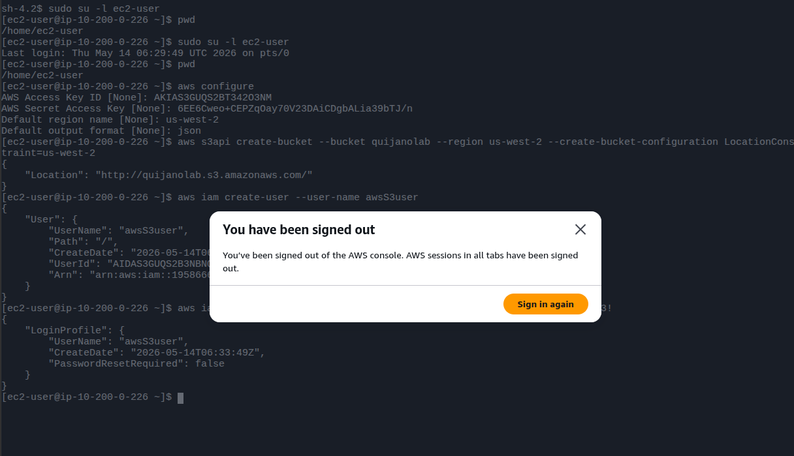
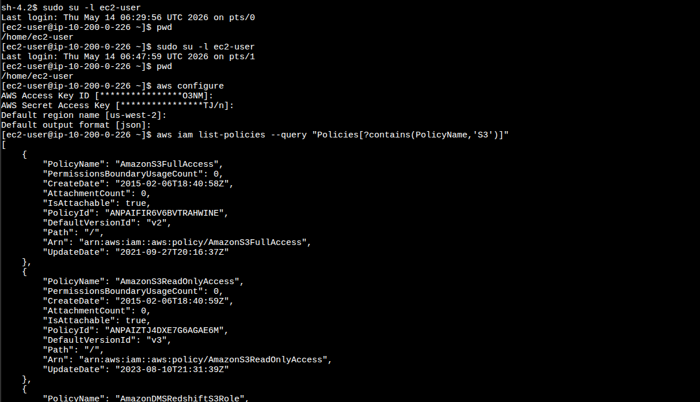
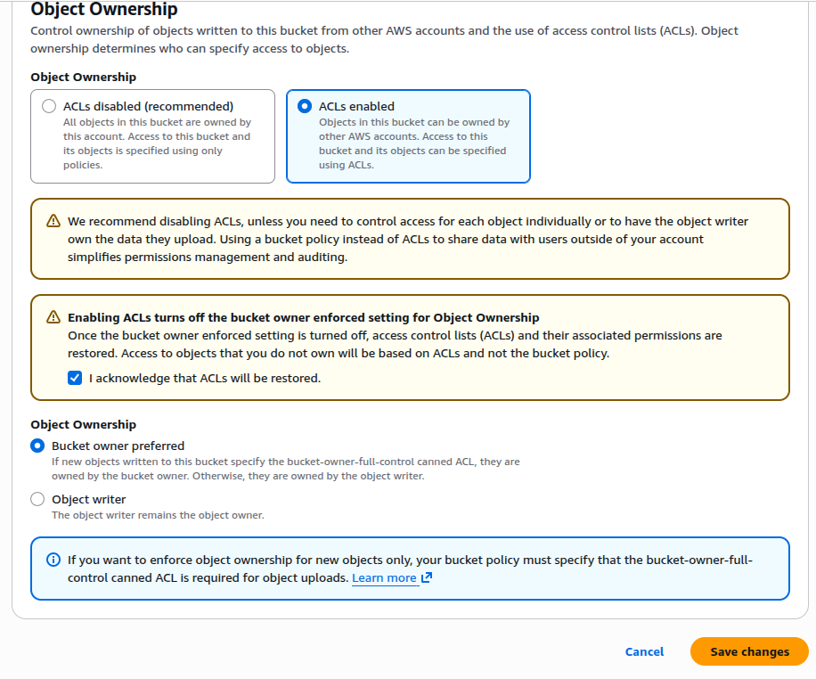
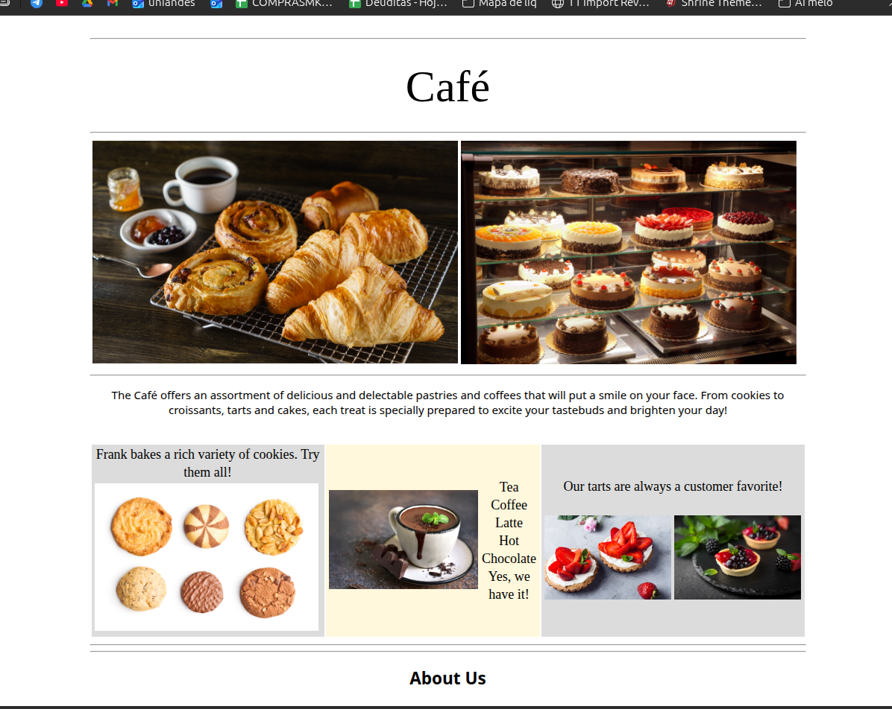
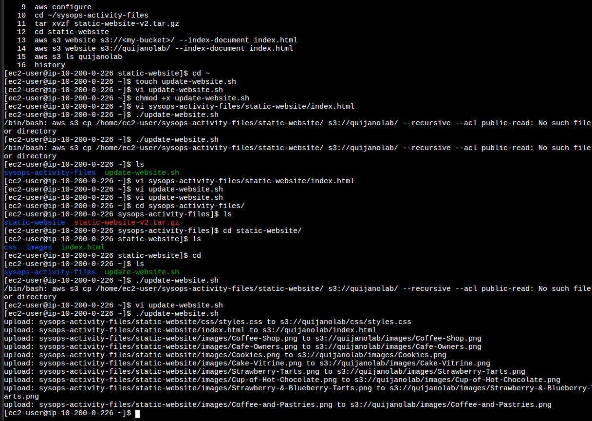

Bucket & Region
Bucket quijanolab created in us-west-2 with explicit
LocationConstraint, which is required for every region other than
us-east-1.
Deployed the Café & Bakery static site to an Amazon S3 bucket using the AWS CLI from an EC2 instance. Provisioned a dedicated IAM user with managed S3 access, opened the bucket to public reads via ACLs, and built a small bash script to make subsequent deploys repeatable.
Connected to an Amazon Linux EC2 instance through SSM Session Manager,
configured the AWS CLI, and created an S3 bucket named quijanolab in
us-west-2. Created an IAM user (awsS3user), attached the
AmazonS3FullAccess managed policy, and re-logged in as that user. Enabled ACLs on
the bucket, uploaded the static site with aws s3 cp --acl public-read, and turned the
bucket into a website endpoint with aws s3 website. Finished by automating the
deploy with a one-line bash script — which hit a shebang bug on the first try.
Bucket quijanolab created in us-west-2 with explicit
LocationConstraint, which is required for every region other than
us-east-1.
Dedicated user awsS3user with the AWS managed policy
AmazonS3FullAccess. The user signs in with the account ID and password
Training123!.
Public access unblocked, Object Ownership set to ACLs enabled so that
--acl public-read on upload would actually apply to the objects.
The lab fits on a single linear path: connect, configure, provision, secure, deploy, automate.
ssm-user to ec2-user with
sudo su -l ec2-user so subsequent file operations land under
/home/ec2-user.aws configure and pasted the lab's access key, secret key, region
us-west-2 and output format json.us-west-2: the lab fixes the region. Picking anything
else would have made the bucket creation fail because the credentials are issued for that
region only.
quijanolab — must be globally unique across all
AWS accounts.LocationConstraint:aws s3api create-bucket \
--bucket quijanolab \
--region us-west-2 \
--create-bucket-configuration LocationConstraint=us-west-2Response:
{
"Location": "http://quijanolab.s3.amazonaws.com/"
}us-east-1, omitting
--create-bucket-configuration LocationConstraint=<region> returns
IllegalLocationConstraintException. us-east-1 is the only
region that rejects the flag.
aws iam create-user --user-name awsS3user
aws iam create-login-profile --user-name awsS3user --password Training123!aws iam list-policies --query "Policies[?contains(PolicyName,'S3')]"
The output included AmazonS3FullAccess with ARN
arn:aws:iam::aws:policy/AmazonS3FullAccess. That is the policy attached:
aws iam attach-user-policy \
--policy-arn arn:aws:iam::aws:policy/AmazonS3FullAccess \
--user-name awsS3userTraining123!.
aws configure, bucket creation with
Location response, and the IAM user / login profile being created.
Sign-out dialog visible in the foreground.
list-policies filtered by PolicyName — the
AmazonS3FullAccess entry is what gets attached to
awsS3user.
--acl public-read. That flag only takes effect when Object Ownership is
set to ACLs enabled. Without it, every object request would 403,
even with public access unblocked at the bucket level.
cd ~/sysops-activity-files
tar xvzf static-website-v2.tar.gz
cd static-website
ls # css/ images/ index.htmlaws s3 website s3://quijanolab/ --index-document index.htmlpublic-read:aws s3 cp /home/ec2-user/sysops-activity-files/static-website/ \
s3://quijanolab/ \
--recursive --acl public-read
aws s3 ls quijanolab # verify objects
aws s3 website enabled hosting and that the ACL on the
objects allows unauthenticated reads.Task 8 asked for a small bash script to re-run the deploy after editing the local files. The first attempt failed twice with the same error. The cause was a single missing newline.
./update-website.sh printed
/bin/bash: aws s3 cp /home/ec2-user/sysops-activity-files/static-website/ s3://quijanolab/ --recursive --acl public-read: No such file or directory
and the script exited without uploading anything.
#!/bin/bash aws s3 cp /home/ec2-user/sysops-activity-files/static-website/ s3://quijanolab/ --recursive --acl public-read
Everything is on one line. Bash never gets to see the aws command.
#!/bin/bash
aws s3 cp /home/ec2-user/sysops-activity-files/static-website/ s3://quijanolab/ --recursive --acl public-readShebang on its own line. The command starts on the next line as a normal bash statement.
The shebang line has a very specific shape: #! followed by the
absolute path of an interpreter, and then at most one
literal argument string. The kernel parses that first line when it executes the script and
does roughly:
execve("/bin/bash", ["/bin/bash", "<everything after the first space>", "./update-website.sh"], envp)
So in the broken file, /bin/bash was being invoked with the single argument
"aws s3 cp /home/ec2-user/sysops-activity-files/static-website/ s3://quijanolab/ --recursive --acl public-read".
Bash treated that whole string as the path to a script to run — and there is no file with
that absurdly long name, hence No such file or directory. The
aws binary was never reached.
Splitting the shebang onto its own line makes the kernel invoke
/bin/bash ./update-website.sh, and bash then reads the script line by line
like any other source file. The second line becomes a normal command and runs as
expected.
After fixing the script:
chmod +x update-website.sh
./update-website.sh
No such file or directory ), the vi update-website.sh edit, and
the final run that streams upload: ... lines for every file in
static-website/.#!... is just a comment. The kernel is the one that cares,
and it only looks at that very first line before exec'ing the interpreter.
The CLI commands that drove this lab, grouped by purpose.
aws s3api create-bucket --bucket <name> --region us-west-2
--create-bucket-configuration LocationConstraint=us-west-2
: creates a bucket. Outside us-east-1, the
LocationConstraint is mandatory.aws s3 website s3://<bucket>/ --index-document index.html
: turns on static website hosting and points the endpoint at index.html.aws s3 cp <local> s3://<bucket>/ --recursive --acl public-read
: recursive upload, applying the canned ACL public-read to every object.aws s3 ls <bucket> : quick verification that objects landed.aws iam create-user --user-name <name> : creates the IAM identity.aws iam create-login-profile --user-name <name> --password <pwd>
: enables console sign-in.aws iam list-policies --query "Policies[?contains(PolicyName,'S3')]"
: finds managed policies by name using JMESPath, no need to memorize ARNs.aws iam attach-user-policy --policy-arn <arn> --user-name <name>
: attaches a managed policy to the user.update-website.sh:#!/bin/bash
aws s3 cp /home/ec2-user/sysops-activity-files/static-website/ s3://quijanolab/ --recursive --acl public-readchmod +x update-website.sh : make it executable../update-website.sh : push the local changes to S3 in one step.LocationConstraint is required everywhere except
us-east-1.--acl public-read to take effect; unblocking public access alone is not enough.#!/bin/bash <cmd> on one line breaks.S3 static hosting is one of the cheapest "deploy a website" paths AWS offers: no compute, no load balancer, just a bucket configured for web requests. The lab also reinforces that public access on S3 is a layered problem — bucket-level Block Public Access, Object Ownership, and per-object ACLs all have to align before unauthenticated reads succeed.
The deploy automation step was deceptively simple but produced the most valuable lesson of the lab: a misplaced newline turned a one-line script into a kernel-level error. That detail is the kind of thing only debugging by hand teaches.
The optional aws s3 sync challenge was not completed — the base lab is the
verified deliverable here.